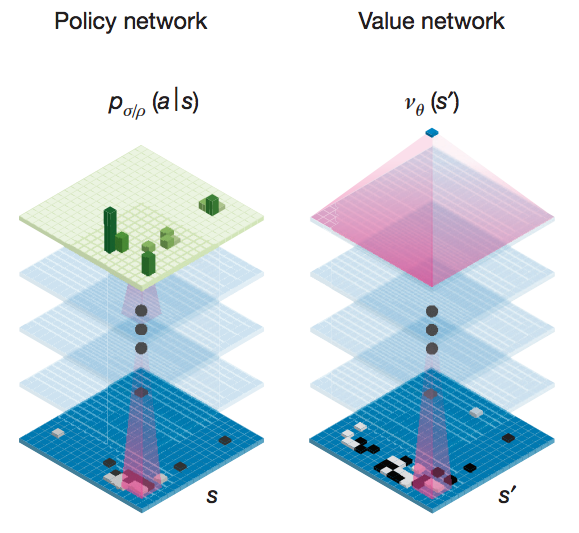
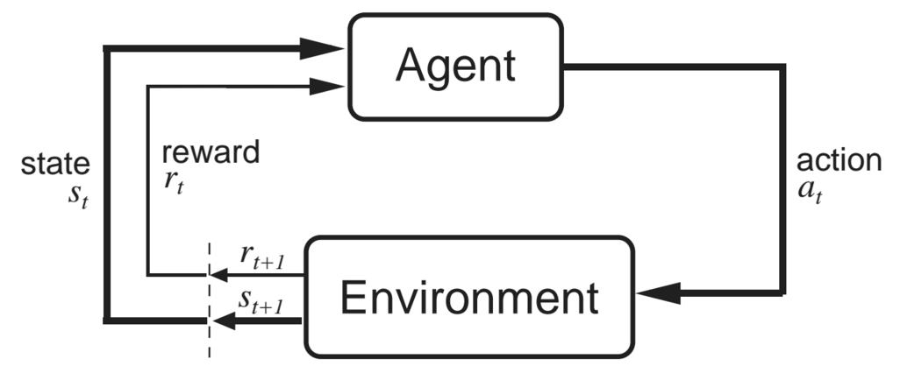

Introduction to Machine Learning and Data Mining
Machine Learning and the Game of Go
Kyle I S Harrington / kyle@eecs.tufts.edu
The Game of Go

The Game of Go
2 players, 19 by 19 board
$10^{761}$ possible games (# chess games $\leq 40$ moves $\approx 10^{43}$)
Goal: encircle opponent's pieces to claim territory

AlphaGo
- Made by DeepMind (now owned by Google)
- AI that uses deep convolutional neural nets to play Go
- Has already beat a professional player (Fan Hui)
- Has now won the first 2 of 5 matches against world champion Lee Sedol
- Published in Nature
AlphaGo
Uses convolutional neural networks for processing/representing the game
Trained with expert data and self-play using reinforcement learning
AlphaGo
Day 2 of competition - start
AlphaGo
- Supervised learning of expert moves
- Train a fast player for use in tree search
- Use reinforcement learning to optimize beyond expert moves (instead of memorize them)
Machine Learning for Games
What are the machine learning questions in gameplay?
Machine Learning for Games
What are the machine learning questions in gameplay?
- Classifying/learning expert moves
- Ranking board configurations
- Learning moves to make
- ...
Terminology for Agents
Game AI and reinforcement learning use an agent-centric terminology
- state, $s$: state of environment/game board
- action, $a$: agents perform actions which generally lead to changes in state
- policy, $\pi$: defines an agent's behavior, roughly speaking a mapping from states to actions
Minimax Tree Search
In 2 player, zero-sum games both players want to win
From some state of the game, we can predict a sequence of alternating actions where
- Self: maximizes the next state of the board
- Opponent: minimizes (with respect to self) the next state of the board
Minimax Tree Search

Image from Maschelos at English Wikipedia
Monte Carlo Tree Search
MCTS is a randomized algorithm to sample possible outcomes
Idea: Simulate game play from a relevant board state and store outcome. Do this many times.
Monte Carlo Tree Search
- Selection: grow tree in a promising direction to node L
- Expansion: If L is not terminal, choose a child node C
- Simulation: "randomly" play the game starting from C
- Backpropagation: store the result of simulation in the nodes starting at C
Monte Carlo Tree Search
But what if the game tree is huge?
There are about $10^{761}$ possible paths in the Go game tree
Go and Neural Nets
A Go board is basically an image (2D pixels with value: empty/black/white)

Convolutional Neural Networks
Input neurons in CNNs have "receptive fields" that cover patches of an input

Image from UFLDL, Stanford
Convolution
Convolution is the process of taking a kernel, sliding it over an input image, and taking an innner product

Image from UFLDL, Stanford
Pooling
Pooling is an aggregation over a pool of units/neurons

Image from UFLDL, Stanford
Softmax Function
Generalized logistic function, to squash K-dimensional values
Choose action $a$ with probability:
$\frac{e^{Q_t(a) / \tau}}{\sum^K_{b=1} e^{Q_t(b)/ \tau}}$
where $Q_t(a)$ is the value of action $a$ at time $t$
Training CNNs
Normal neural network training methods apply
- Backpropagation
- Stochastic gradient descent
AlphaGo's Network Structure
Image from Silver et al, 2016
Reinforcement Learning
Agent transitions through states by making actions, while receiving rewards
Image from the RL book by Sutton and Barto
Reinforcement Learning
In RL, agents attempt to maximize reward obtained in the long-term
Rewards can be described as a summed sequence:
$R_t = r_{t} + r_{t+1} + r_{t+2} + ... + r_{T}$
Reinforcement Learning
The core of most RL algorithms is to estimate a value function:
$V^{\pi} (s) = E_{\pi} \{ R_t | s_t = s \}$
Reinforcement Learning
Learning the value function $V^{\pi}$ is accomplished by trial-and-error and reinforcement via reward signal
Dynamic programming is used to do this
We'll cover specifics in the RL lectures
Midterm
Take home exam, due March 29
Will cover everything from kNN to Clustering and Gaussian mixture models (next Tuesday's class)
What Next?
More unsupervised learning